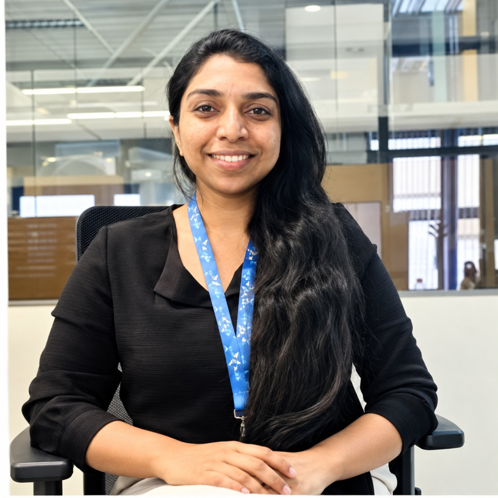
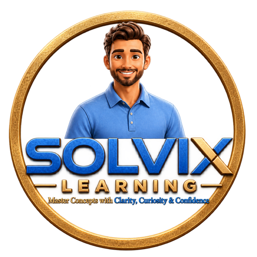
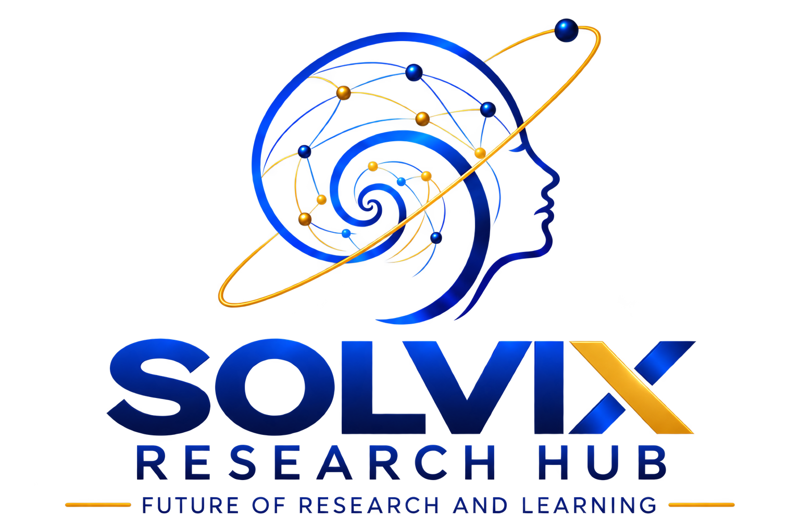

Ionosphere–Earth coupling
Studying possible statistical associations between ionospheric electric-field variations and seismic activity using satellite observations and careful controls.
Geospace · Seismo-ionosphereI study how Earth’s near-space environment changes, bringing together satellite observations, ionospheric physics, signal processing and machine learning.

I am a space science researcher working at the intersection of ionospheric physics, satellite observations and machine learning. I completed my PhD in Space Science and Technology at the University of Trento and Fondazione Bruno Kessler in Italy.
My research uses computational methods to study transient geophysical phenomena. I am especially interested in building analysis that is reproducible, statistically careful and grounded in the physics of the system.
I combine physical context and data-driven methods to explore the complex links between the Sun, near-Earth space and our planet.
Studying possible statistical associations between ionospheric electric-field variations and seismic activity using satellite observations and careful controls.
Geospace · Seismo-ionosphereExploring anomaly detection and deep-learning approaches for multivariate time series and spectral representations of ionospheric data.
Time series · Explainable analysisInvestigating solar-wind structures and transient events, and their impacts on Earth’s magnetosphere and upper atmosphere.
Solar wind · MagnetosphereMy approach connects physical questions, robust data analysis and transparent evaluation.
Observe → Model → ValidateResearch can feel like a closed world when students first encounter it. Through mentoring and outreach, I want to make the process more approachable: how to ask a useful question, read scientific work, and build the skills to investigate an idea.
I work with school learners, university students and early-career researchers, connecting curiosity with practical guidance informed by my own research journey.
Curiosity is a starting point. Evidence helps it become discovery.
Alongside my research, I am building education and research-guidance initiatives for curious learners and aspiring researchers.

Science, mathematics, astronomy and research learning designed to make complex ideas more approachable.
Visit Solvix Learning ↗
Research guidance, scientific writing and PhD preparation for students and early-career researchers.
Visit Solvix Research Hub ↗My path has taken me from solar–terrestrial physics to satellite-based ionospheric research and computational methods.
Full academic CV ↗University of Trento & Fondazione Bruno Kessler, Italy · Deep-learning-based anomaly detection in ionospheric observations and statistical association with seismic activity.
Politehnica Bucharest, Romania · Methodological work on transformer, diffusion and parameter-efficient approaches for DEMETER ICE electric-field data.
Greece · Collaborative research on ionospheric variability and multi-instrumental approaches to seismo-ionospheric phenomena.
Amrita Vishwa Vidyapeetham, India · Master’s research at IIT Indore on CMEs, interplanetary sheaths, corotating interaction regions and geomagnetic effects.
For research, collaboration, mentoring and outreach enquiries.
meghababu.kaniyath@gmail.com